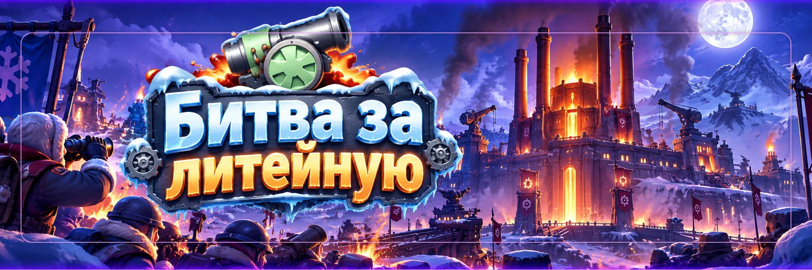

Литейная
Автор: SOVA58
Командное PvP-событие, где два альянса сражаются за здания и очки. Главное - контроль карты и выполнение своей роли.
Карта Литейной
Фото оставлено как быстрая шпаргалка по расположению главных объектов.
- Центр карты - самая важная зона.
- Боковые здания тоже дают очки и полезные бонусы.
- До старта лучше заранее распределить группы по направлениям.
⏱️ Перед стартом
Проверьте группу, назначенную точку и команды Р4/Р5. Не разбегаемся по карте самостоятельно.
🎯 Главная задача
Захватываем и удерживаем здания. Чем важнее объект, тем больше пользы он приносит команде.
Центр очень ценен, но нельзя бросать все боковые точки ради одной большой драки.
👥 Роли
- Атака - выбивает противника и забирает ключевые здания.
- Защита - держит уже занятые объекты.
- Мобильная группа - быстро помогает там, где начинается давление.
- Поддержка - подкрепляет сборы и гарнизоны.
🏭 Захват здания
Выбили защитников, заняли объект и сразу закрепились. Важное здание без подкрепления обычно быстро отдают обратно.
📦 Очки и разбросанные припасы
Занятые объекты постепенно производят очки арсенала. По опубликованной механике при заполнении лимита часть новых очков идёт сразу игроку, а часть временно хранится у здания. При захвате здания противником временные очки выпадают в виде припасов, которые можно собрать на карте. Следите за такими припасами: это отдельный источник очков, даже если центр удержать не получается.
В отдельные волны появляются оружейные мастерские, которые тоже можно разграбить ради очков. Координируйте их сбор с R4/R5.
⚔️ Не дерёмся просто ради драки
Атака имеет смысл, если помогает взять объект, защитить его, сорвать подкрепление или убрать мешающую топку рядом с целью.
Если бой идёт далеко от зданий, соперник может спокойно набирать очки.
🦸 Герои
Для своей атаки или сбора используем сильную PvP-тройку. Для вступления в чужой сбор первым ставим героя с полезным первым экспедиционным навыком: учитываются до четырёх таких навыков участников. Для обороны здания подбирайте навыки защиты, а для атаки — усиления наступления.
Джина для серьёзного PvP обычно не лучший выбор.
🏥 Лечение
Следим за ранеными внутри события и возвращаем войска в бой. Не ждём, пока армия почти закончится. Ранения и потери в Литейной не уменьшают реальную армию города после боя: это отдельная боевая площадка.
📍 Телепорты
Телепортируемся ближе к своей задаче. Хорошая позиция сокращает путь подкрепления и позволяет быстрее реагировать на смену цели.
🛡️ Если вы слабее противника
Не нужно постоянно биться с его сильнейшими игроками.
- занимайте свободные здания;
- подкрепляйте гарнизоны;
- вступайте в сборы сильных игроков;
- помогайте на флангах и быстро меняйте направление.
💬 Опыт игроков
✅ Выполняем назначенную роль.
✅ Не бросаем важное здание ради случайной драки.
✅ Телепорт рядом с задачей экономит огромное количество времени.
✅ Сильные игроки атакуют, остальные отлично работают подкреплением и захватом свободных точек.
✅ Следим за командами Р4/Р5 весь бой.
🚫 Частые ошибки
- бегать по карте без задачи;
- атаковать всё подряд;
- оставлять захваченное здание без подкрепления;
- игнорировать команды;
- стоять далеко от своей группы;
- тратить весь бой на одного сильного соперника.
→ 📍 телепорт ближе
→ 🏭 захватили объект
→ 🛡️ закрепились
→ ⚔️ отбиваем атаки
→ 👀 следим за командами
→ 🔄 меняем цель по ситуации
Главное
Литейная выигрывается не личными победами, а контролем карты.
Держим свои здания, помогаем группе и не превращаем бой в часовую охоту за одной топкой.